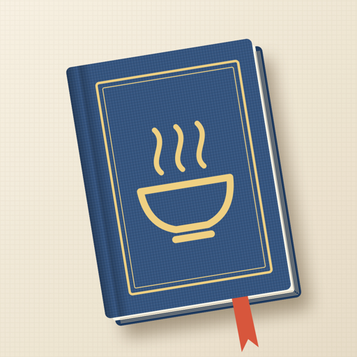

台所の一冊
うちのレシピを、1冊の本に
自分のレシピで1冊の本を作る、iPhone と iPad のアプリです。レシピを書いていくと、表紙・とびら・もくじ・章・奥付のそろった本の形に組まれます。画面でめくって読めて、紙に刷れば、手作りの料理の本になります。
- 題名と布の色を決めると、布張りの表紙ができます（布は8色、箔は金・銀・白）
- 章を作り、料理の名前・材料・作り方・メモ・写真を書きます。もくじとページ番号は自動で付きます
- 紙のレシピをカメラで写すと、文字になります。材料だけ、作り方だけ、と欄ごとに写すこともできます
- 「読む」を押すと、紙をめくって読めます。横向きの広い画面では見開きになります
- 「紙の本にする」で、PDF にして印刷できます。「冊子」を選ぶと、A4 の紙の両面に刷って二つ折りにするだけで A5 の本になる順に、ページを並べます
- 登録はいりません。本・レシピ・写真は、端末の中だけに保存します。課金はありません
料理の本やウェブサイトのレシピは、アプリには入っていません（はじめから入っている見本の本は、このアプリのために書いたものです）。